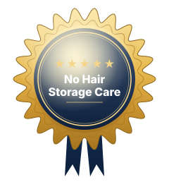

No Hair Storage Care is a premier self-storage facility located in Anytown, USA, offering a comprehensive range of storage options to meet all of your personal and business needs. Whether you're looking to store household items during a move, business inventory, or even vehicles, our facility has the perfect solution for you. With multiple unit sizes available, from compact 5x5 units to spacious 10x30 units, you’ll find exactly what you need. We offer both climate-controlled and dry storage units to ensure your belongings are stored safely and securely, whether they require protection from temperature fluctuations or just need a simple, dry space. At No Hair Storage Care, we prioritize security and customer satisfaction. Our facility is equipped with state-of-the-art security systems, including 24/7 video surveillance, secure gated access, and personalized entry codes. This ensures your items are safe, no matter the time of day or night. Our staff is dedicated to providing you with top-notch service, assisting you in selecting the right unit size, guiding you through the rental process, and answering any questions you may have. We offer flexible rental agreements to accommodate both short-term and long-term storage needs. Whether you're in need of temporary storage while relocating, or looking for a long-term solution for your business’s inventory, we have affordable and scalable options that fit your budget and timeline. Our competitive pricing ensures that you get the best value for your storage needs without compromising on security or convenience. For added convenience, we provide an easy-to-use online rental system. You can rent your unit, make payments, and manage your account all from the comfort of your home or on the go. This 24/7 access to our online platform allows you to control your storage experience and ensures a seamless process from start to finish. Located just minutes from the heart of Anytown and easily accessible from Highway 52 and Highway 54, our facility is ideally situated for residents and businesses in Anytown, the Lake area, and the surrounding areas. Our friendly and professional team is always available to assist you with any questions or concerns you may have, ensuring your storage experience is as smooth and stress-free as possible. Choose No Hair Storage Care for a safe, secure, and convenient storage experience. Whether you're storing furniture, documents, recreational vehicles, or business supplies, we have the perfect storage solution for you.

Simple, secure, self-service
No Hair Storage Care is a premier self-storage facility located in Anytown, USA, offering a comprehensive range of storage options to meet all of your personal and business needs. Whether you're looking to store household items during a move, business inventory, or even vehicles, our facility has the perfect solution for you. With multiple unit sizes available, from compact 5x5 units to spacious 10x30 units, you’ll find exactly what you need. We offer both climate-controlled and dry storage units to ensure your belongings are stored safely and securely, whether they require protection from temperature fluctuations or just need a simple, dry space. At No Hair Storage Care, we prioritize security and customer satisfaction. Our facility is equipped with state-of-the-art security systems, including 24/7 video surveillance, secure gated access, and personalized entry codes. This ensures your items are safe, no matter the time of day or night. Our staff is dedicated to providing you with top-notch service, assisting you in selecting the right unit size, guiding you through the rental process, and answering any questions you may have. We offer flexible rental agreements to accommodate both short-term and long-term storage needs. Whether you're in need of temporary storage while relocating, or looking for a long-term solution for your business’s inventory, we have affordable and scalable options that fit your budget and timeline. Our competitive pricing ensures that you get the best value for your storage needs without compromising on security or convenience. For added convenience, we provide an easy-to-use online rental system. You can rent your unit, make payments, and manage your account all from the comfort of your home or on the go. This 24/7 access to our online platform allows you to control your storage experience and ensures a seamless process from start to finish. Located just minutes from the heart of Anytown and easily accessible from Highway 52 and Highway 54, our facility is ideally situated for residents and businesses in Anytown, the Lake area, and the surrounding areas. Our friendly and professional team is always available to assist you with any questions or concerns you may have, ensuring your storage experience is as smooth and stress-free as possible. Choose No Hair Storage Care for a safe, secure, and convenient storage experience. Whether you're storing furniture, documents, recreational vehicles, or business supplies, we have the perfect storage solution for you.
We take the security of your property seriously — gated access, video surveillance and a well-lit facility.
We commit to providing you a clean, ready-to-rent unit and friendly, helpful service.
Access your storage unit 24 hours a day, 7 days a week, and book or pay online anytime.
Book and pay online in minutes — with enhanced security, reserving a unit has never been easier.
View Units & Pricing